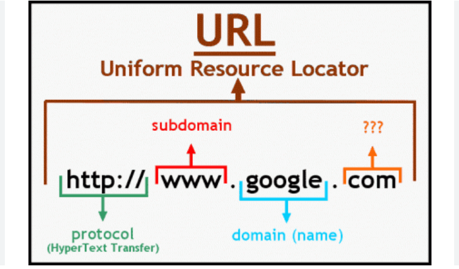

<!DOCTYPE html>
<html lang="en"></html>
<head>
    <meta charset="UTF-8">
    <meta name="viewport" content="width=device-width, initial-scale=1.0">
    <nav>
        <a href="index.html">Home</a>&#65372;
        <a href="www.html">World Wide Web</a>&#65372;
        <a href="tcpip.html">TCP/IP</a>&#65372;
        <a href="http.html">HTTP</a>&#65372;
        <a href="dns.html">DNS</a>&#65372;
        <a href="html.html">HTML</a>&#65372;
        <a href="webserver.html">Web Server</a>&#65372;
        <a href="webbrowser.html">Web Browser</a>&#65372;
        <a href="url.html">Uniform Resource Locator</a>&#65372;
        <a href="intranet.html">Intranet</a>&#65372;
        <a href="extranet.html">Extranet</a>&#65372;
        <a href="ftp.html">File Transfer Protocol</a>&#65372;
        <a href="web1.0.html">Web 1.0</a>&#65372;
        <a href="web2.0.html">Web 2.0</a>&#65372;
        <a href="web3.0.html">Web 3.0</a>&#65372;
        <a href="web4.0.html">Web 4.0</a>&#65372;

    </nav>
<title>Terminology:Uniform Resource Locator</title>
 <style>
    body {
            
            background-color: #fff5f7;
            margin: 0;
            padding: 20px;
        }
        h1{
            color: #c2185b;
            font-size: 30px;
            text-transform: uppercase;
        }
        h2{
            color: #f48fb1;
            font-size: 22px;
            text-transform: uppercase;
            text-decoration: underline;

        }
        p{
            color: #333;
            font-size: 18px;
            line-height: 1.6;
            font-style: italic;
            padding: 10px;
        }
        ul{
            color: #333;
            font-size: 18px;
            line-height: 1.6;
            font-style: italic;
            padding: 10px;
        }
</style>
</head>
<body>
    <h2>Uniform Resource Locator (URL)</h2>
    <p>
        A Uniform Resource Locator (URL) is a reference (an address) to a resource on the internet. It specifies the location of a resource and the protocol used to access it. A URL typically consists of several components, including the protocol, domain name, path, and optional query parameters.
    </p>
    <p>
        For example, in the URL "https://www.example.com/index.html?search=term":
        <ul>
            <li><strong>Protocol:</strong> "https" indicates that the resource is accessed using the Hypertext Transfer Protocol Secure (HTTPS).</li>
            <li><strong>Domain Name:</strong> "www.example.com" specifies the server where the resource is hosted.</li>
            <li><strong>Path:</strong> "/index.html" indicates the specific resource being requested on the server.</li>
            <li><strong>Query Parameters:</strong> "?search=term" provides additional information to the server, often used for search queries or filtering results.</li>
        </ul>
    </p>
    
    <h2>Importance of URLs</h2>
    <p>
        URLs are essential for navigating the web, as they allow users to access specific resources and services. They are used in web browsers, email clients, and other applications to locate and retrieve information from the internet.
    </p>
    <h2>Key Components of a URL</h2>
    <ul>
        <li><strong>Protocol:</strong> The protocol specifies how the resource should be accessed. Common protocols include HTTP, HTTPS, FTP, and mailto.</li>
        <li><strong>Domain Name:</strong> The domain name identifies the server where the resource is hosted. It is often a human-readable name that corresponds to an IP address.</li>
        <li><strong>Path:</strong> The path specifies the location of the resource on the server. It can include directories and filenames.</li>
        <li><strong>Query Parameters:</strong> Query parameters provide additional information to the server, often used for search queries, filtering results, or passing data to web applications.</li>
    </ul>
    <h2>How URLs Work</h2>
    <p>
        When a user enters a URL into a web browser, the browser parses the URL to determine the protocol, domain name, path, and any query parameters. The browser then uses the specified protocol to send a request to the server identified by the domain name. The server processes the request and returns the requested resource, which the browser then renders for the user to view and interact with.
    </p>
    <h2>URL VS URI</h2>
    <p>
        A URL is a specific type of Uniform Resource Identifier (URI) that provides the means to access a resource on the internet. While all URLs are URIs, not all URIs are URLs. A URI can be a name, a locator, or both, while a URL specifically provides the location of a resource and the protocol to access it.
    </p>
    <h2>Example</h2>    
    <p>
        An example of a URL is "https://www.google.com/search?q=example". This URL uses the HTTPS protocol to access Google's search service, with the query parameter "q" set to "example" to perform a search for that term.
    </p>
    <h2>Conclusion</h2>
        <p>
            URLs are fundamental to the functioning of the web,  as they allow users to access and interact with resources across the internet. They provide a standardized way to locate and retrieve information, making it easier for users to navigate the vast amount of content available online.
        </p>

    <p>
        URLs are essential for navigating the web, as they allow users to access specific resources and services. They are used in web browsers, email clients, and other applications to locate and retrieve information from the internet.        
    </p>
</body> 
</html>
